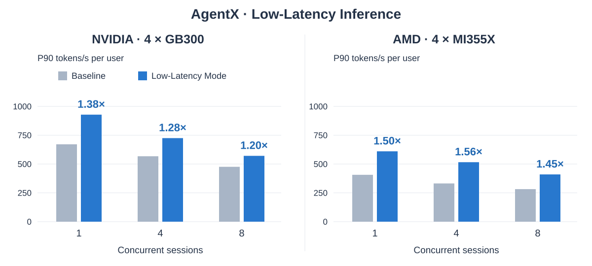
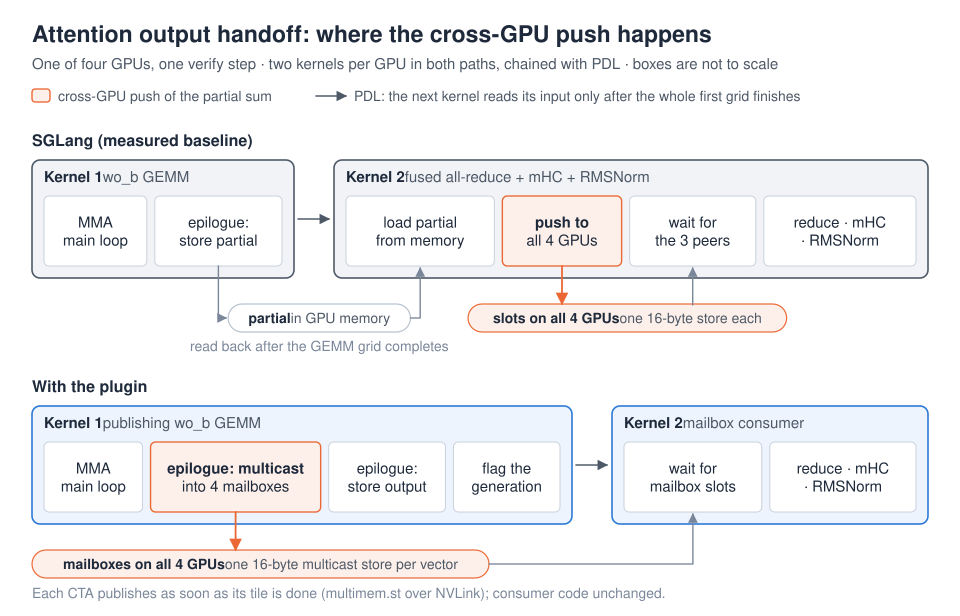
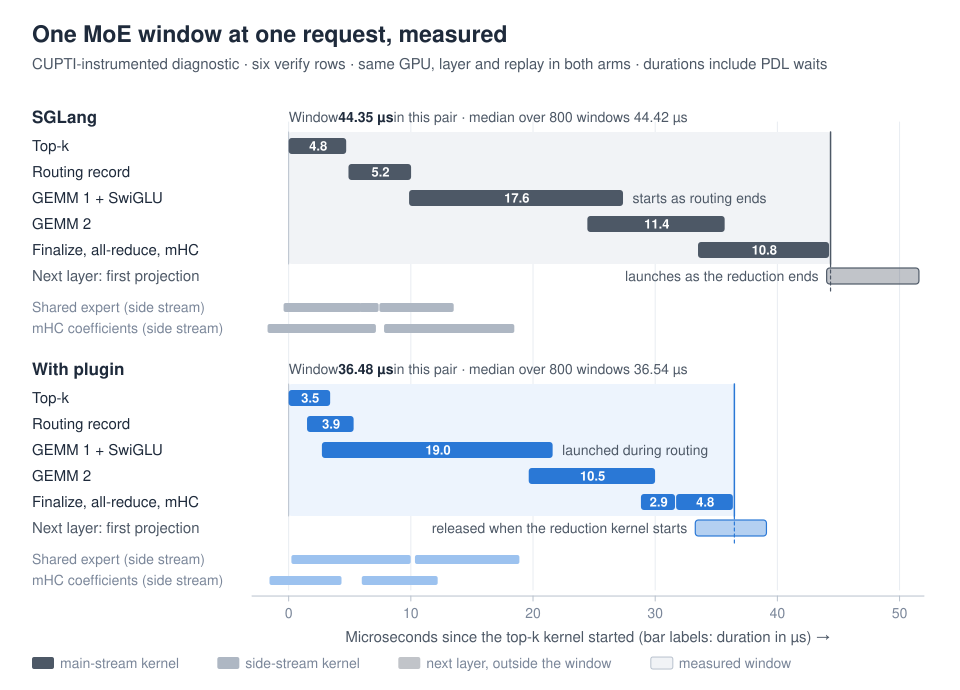
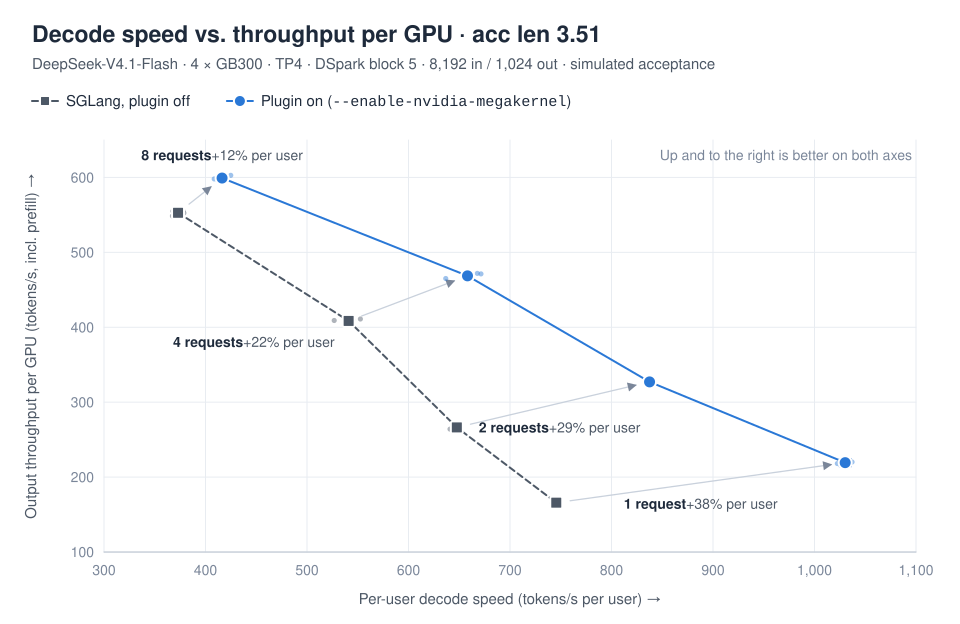
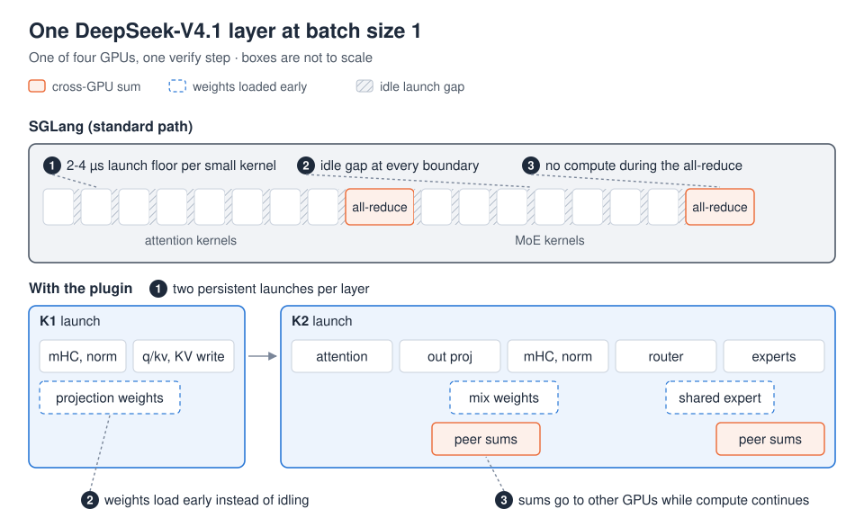
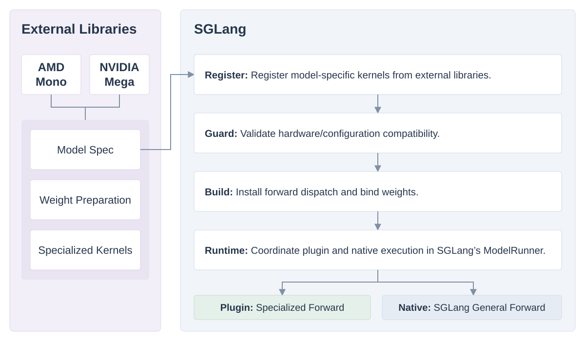

SGLang Low‑Latency Mode: Kernels and Runtime
On this page
- Kernels for Low-Latency Inference
- NVIDIA Low-Latency Kernels
- Where the Time Goes
- Low-Latency-Specific Optimizations
- Serving results
- AMD Low-Latency Kernels
- Two persistent launches per layer
- Overlapping stages inside a launch
- Bringing the all-reduce into the kernel
- Serving results
- Plugin System: Design and Integration
- Future Plans
- Broader Model Support
- CI and Performance Validation
- Evolving Shared Plugin Interfaces
Low-latency inference offers many opportunities for optimizations tailored to specific models, hardware and workloads. These optimizations often require extensive kernel fusion and duplicate code across implementations, making them difficult to maintain. To support this specialization, we introduce SGLang Low-Latency Mode. It brings specialized kernels into SGLang through a plugin framework and delivers substantial latency reductions on both NVIDIA and AMD GPUs. In AgentX trace replay on four NVIDIA GB300 GPUs, P90 per-user token generation speed increases from 671.2 to 928.4 tokens/s (1.38×) at one concurrent session. On four AMD MI355X GPUs, it increases from 331.6 to 516.0 tokens/s (1.56×) at four concurrent sessions. Each result compares low-latency mode with the SGLang baseline on the same hardware.

AgentX · DeepSeek-V4.1-Flash with DSpark · NVIDIA GB300 and AMD MI355X.
Table of Contents
Kernels for Low-Latency Inference
NVIDIA Low-Latency Kernels
On NVIDIA GPUs, we reduce latency by overlapping dependent kernels and communication while specializing attention, MoE and draft sampling for small batches. These kernels live in sgl-nvidia-mega which accelerates both target verification and draft execution for DeepSeek-V4.1-Flash with DSpark on NVIDIA GB300 GPUs.
Where the Time Goes
At one request, DSpark verifies six token rows per step, leaving little work for each kernel while dependencies and cross-GPU communication add latency. In warmed CUDA-graph profiles, the plugin reduces the verify graph from 1,205 kernels to 1,189 but cuts the median decoder-layer latency from 96.8 µs to 68.4 µs. The gains come largely from reducing waits and overlapping work, with the largest reduction in the attention region. The table breaks down these changes before we walk through the main optimizations.
| Region of one decoder layer, one request (median) | SGLang | With plugin |
|---|---|---|
| Attention, from the previous MoE output to the output projection | 33.4 µs | 18.3 µs |
| Attention output projection and tensor-parallel reduction | 10.9 µs | 9.4 µs |
| MoE, from routing to the reduced output | 44.4 µs | 36.5 µs |
| Whole layer, from one routing step to the next | 96.8 µs | 68.4 µs |
Medians over 780–800 instances per arm on four GPUs. Region medians do not add up to the whole-layer median. Profiling affects timings; these measurements explain the mechanisms rather than report serving performance.
Low-Latency-Specific Optimizations
1. Launch the next kernel before its input exists. Programmatic dependent launch (PDL) lets a kernel start while its predecessor is still running. It can prepare barriers, set up tensor memory and load weights before waiting for the input it needs. SGLang already uses PDL. The plugin moves dependency releases earlier so more of this preparation overlaps with ongoing computation. For example, the MoE reduction releases the next layer’s first projection as soon as it starts polling for peer results.
The attention path also uses projection GEMMs specialized for small batches and applies RoPE while loading the query to remove a separate kernel. Where dependencies allow it, attention begins gathering KV data before waiting for the query. At one request, the plugin also moves independent Engram lookups and projections onto a side stream at the start of the step. Their all-reduces stay on the main stream to preserve communication order across GPUs.
2. Publish the projection output from the GEMM epilogue. After the attention output projection, each GPU holds a partial result that must be reduced across GPUs. SGLang’s standard path uses two kernels: the GEMM writes its output, then a fused kernel reads it back, sends it to peers and performs the reduction, mHC update and normalization.
The plugin keeps two kernels but moves the send into the GEMM’s epilogue. Each CTA publishes its completed tile directly from registers to peer GPUs through NVLink multicast stores while other tiles are still being computed. The consumer starts through PDL and waits for the published results before reducing them. This starts communication earlier and avoids rereading the partial output just to send it. The consumer’s computation remains unchanged.

The plugin moves the cross-GPU send into the GEMM epilogue. Both paths use two kernels; box sizes do not represent durations.
3. Start the expert GEMMs before routing finishes. At low concurrency, routing can take a substantial share of the MoE path. With at most eight rows, each expert’s selected tokens fit in one eight-row tile. The plugin uses a bitmap and population counts to place these tiles without scanning or sorting while preserving SGLang’s top-k selections. It launches the first expert GEMM early to overlap setup with routing and skips an all-zero tile in the padded weights. The standard kernels already use eight-row tiles; the gains come from simpler routing, earlier execution and less wasted work. In the profiled runs, the median MoE window falls from 44.4 µs to 36.5 µs with little change in the second GEMM or reduction.

One matched trace pair from the same GPU, layer and replay. GEMM1’s bar includes its wait for routing, so an earlier start can produce a longer bar while shortening the overall MoE window.
4. Keep sequential draft sampling in one kernel. DSpark’s Markov head proposes tokens sequentially. The plugin combines all five proposals into one kernel launch per GPU and keeps head weights in registers while coordinating token selection across GPUs. This reduces the profiled proposal span from 85.1 µs to 34.2 µs without changing SGLang’s speculative worker or acceptance logic.
Serving results
On an 8K-input / 1K-output workload, the NVIDIA plugin improves per-user decode speed by 12–38% at 1–8 concurrent requests on four GB300 GPUs. Both runs use the same setup and simulated mean acceptance length of 3.51, changing only the plugin flag.

DeepSeek-V4.1-Flash with DSpark · 4 × GB300 · 8K input / 1K output.
AMD Low-Latency Kernels
On AMD GPUs, we reduce latency by combining much of a decoder layer’s computation and communication into a few persistent kernels. These kernels live in sgl-amd-mono which accelerates both target verification and draft execution for DeepSeek-V4.1-Flash with DSpark on AMD Instinct MI355X and MI350X GPUs.
At low concurrency, each decoder layer runs dozens of small kernels and two tensor-parallel all-reduces. Three costs dominate:
- Launch overhead: HIP graphs remove the CPU’s launch work, but each small kernel still costs 2-4 µs on the GPU.
- Idle boundaries: Each kernel must finish before the next starts, so compute units idle while one kernel drains and the next ramps up, and weight loading pauses.
- Communication stops: Each layer waits twice for an all-reduce across GPUs, with no computation running.

The plugin replaces dozens of small kernels with two persistent launches, loads weights early and overlaps the cross-GPU sums with computation. Box sizes do not represent durations.
Two persistent launches per layer
Persistent FlyDSL kernels combine most of each layer into two launches. K1 handles the mHC update, query and KV projections and KV-cache writes. K2 handles attention, output projections, the remaining mHC update, MoE and both all-reduces. Index layers add compression, K2i scoring and top-k between them. The launch boundary makes K1’s KV writes visible across the GPU before K2 reads them.
Overlapping stages inside a launch
Each value a stage produces is stored together with a tag for the current decode step, so the next stage, on the same GPU or another one, starts on a value as soon as its tag matches. No separate flag or reset between steps is needed. Weights that do not depend on routing load before their inputs arrive: K1’s projection weights before the norm finishes, and in K2 the mHC mix weights and the shared expert’s weights before the data they multiply. Routed-expert weights load once the router has chosen the experts.
Bringing the all-reduce into the kernel
As each output-projection tile is computed, K2 pushes it to every GPU’s memory, and each GPU sums the pieces in rank order while other workgroups are still producing tiles (push and reduce stages). The MoE output is reduced the same way. Every cross-GPU wait has a deadline below SGLang’s watchdog timeout; a missed deadline stops the launch on every GPU instead of hanging the server.
The AMD implementation is compatible with decode graphs and integrates directly with SGLang’s graph runner. Kernels are compiled and buffers are prepared during initialization. SGLang then captures the specialized execution path for each supported shape and replays it through the existing serving flow.
Serving results
In AgentX trace replay, the AMD plugin improves P90 per-user token generation speed by 45–56% at 1, 4 and 8 concurrent sessions on four MI355X GPUs, as shown in the overview figure. Both runs use the same AgentX recipe with DSpark speculative decoding and TP4.
Plugin System: Design and Integration
Specialized kernels can require substantial amounts of code. Each combination of hardware, model architecture and parallel configuration may need its own implementation. Different workloads add further specialization. More combinations mean more code to review, test and maintain. Bringing every implementation into SGLang would make the core codebase increasingly difficult to maintain and place a growing workload on its reviewers and maintainers.

External kernel libraries connect to SGLang through registration, validation, build and runtime dispatch. The diagram shows the shared design; the AMD and NVIDIA interfaces are still evolving.
The plugin system connects these external libraries to SGLang through model specifications that declare their requirements and supported configurations. Kernel teams can develop their implementations independently while reusing SGLang’s scheduling and runtime resources.
The integration separates startup preparation from execution:
- Register: A plugin registers a specification for each model architecture it supports. The specification describes the implementation’s requirements and provides the entry point for building it. This gives SGLang a way to discover external implementations while keeping the details of model support in the library that owns the kernels.
- Guard: Specialized kernels make assumptions about hardware, precision, parallelism and serving features. SGLang checks the declared requirements before loading weights so an incompatible configuration fails early. Additional checks on the loaded model run before the plugin is built. These checks distinguish an unsupported server configuration from a supported server encountering a step outside the plugin’s coverage.
- Build: Weight preparation and execution resources are set up during initialization so requests can reuse them. The integration accommodates the needs of each implementation: AMD can retain checkpoint tensors before weight conversion, while NVIDIA receives a binding through which it can access runtime state as that state becomes available. SGLang builds the plugin before sizing the KV cache so its allocations are accounted for, then installs dispatch in the model’s forward path.
- Runtime: Specialized and general execution coexist because a plugin may cover only certain step types and token counts. The installed dispatcher uses the plugin’s support conditions to select its forward or SGLang’s original forward. Tensor-parallel ranks must agree on coverage to avoid entering incompatible collectives. This selection fits into ModelRunner’s existing execution flow. During graph capture, the chosen path is recorded for that shape; serving can then replay the graph without repeating Python dispatch.
This design lets kernel teams ship focused optimizations without adding every specialized implementation to SGLang’s core codebase. It concentrates integration work at explicit interfaces and allows each library to expand its coverage incrementally. Specialized kernels can serve the cases they optimize while SGLang’s general forward handles the remaining steps within a supported configuration.
Future Plans
Broader Model Support
Megakernel/Monokernel development is underway for GLM-5.3, K3, MiniMax M3 and other models on both NVIDIA and AMD GPUs. We plan to integrate these implementations into the plugin framework as they become ready. These low-latency kernels show promising potential for further performance improvements.
CI and Performance Validation
External kernel implementations sit outside SGLang’s regular code review process. Strong CI coverage at the plugin interface is therefore essential to verify that these implementations meet SGLang’s correctness and runtime requirements. We plan to test compatibility checks, weight binding, forward outputs and state updates, including KV-cache writes. End-to-end tests will also cover graph execution, fallback behavior and performance regressions as SGLang and the external libraries evolve.
Evolving Shared Plugin Interfaces
Although the plugin framework is now in place, it is still at an early stage. We expect to refine its interfaces and design through long-term iteration as we integrate more kernels and learn from their use in production.